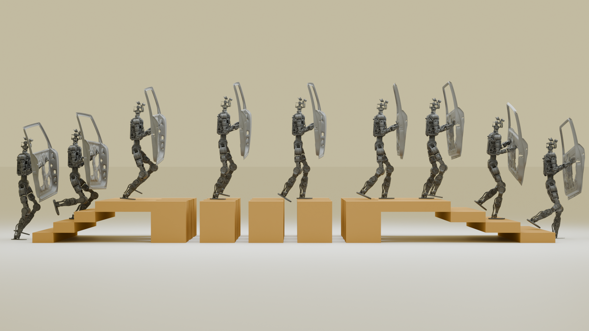
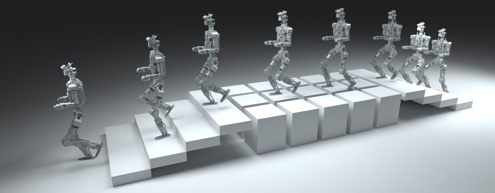
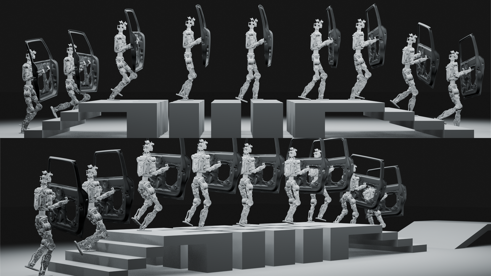

for Payload-Robust Perceptive Humanoid Locomotion

Service humanoids must traverse structured non-flat terrain while carrying tools or cargo.
- Sole straddling a step edge → line contact → reduced friction-cone admissibility
- GRF needed to intercept a divergent trajectory scales with total weight
- Payload shifts neutral pelvis pose; time-varying trunk torque requires active absorption


Two parallel modules feed a shared PPO reward. DCM foothold planner: elevation map → GPU-parallel terrain-cost-weighted landing targets + Bézier swing reference → foothold-tracking and terrain reward terms (privileged critic only). Wrench compliance scheduler: virtual spring-damper at sampled load attachment point → wrench-aware compliance targets replace rigid pelvis-height and orientation penalties. Actor: depth-image CNN + proprioception. Critic: actor obs + elevation map, foot forces, planner targets.
The planner selects foothold $i$ minimising: $\mathcal{J}_i = \alpha_\text{pos}\,d_{\text{pos},i} + \alpha_\text{dcm}\,d_{\text{dcm},i} + \alpha_E E_i + \alpha_Q Q_i + \alpha_M M_i - \alpha_\text{climb}\,b_i$

Swing foot tracks a quadratic Bézier arc; apex $xy$ biased toward the higher endpoint:
$\text{bias} = \mathrm{clip}(0.5 + \kappa\,\Delta z / h^*_\text{max},\;b_\text{min},\;b_\text{max})$
- Step-up (bias > 0.5): peak over riser face — prevents premature descent
- Step-down (bias < 0.5): extended horizontal travel — reduces impact angle
- Gap: apex clearance scales with $|\Delta z|$
- Flat: symmetric arc, bias = 0.5
Tangent-guided sole
orientation
Pre-apex window: $\dot{\mathbf{p}}$ rotated 90° in the
sagittal plane →
sole clears riser face, reduces toe-strike risk.
Post-apex window: $\hat{\mathbf{t}}_f =
\dot{\mathbf{p}}/\|\dot{\mathbf{p}}\|$ →
flat-sole tread landing.
Both position and foot heading jointly optimised via exponential
proximity kernel.


Key insight. Payload moment $\boldsymbol{\tau} = \mathbf{r}_\text{load}\times\mathbf{F}$ tilts the trunk; under LIPM the CoM offset grows by $e^{\omega_0 T_\text{step}} > 2$ per step — more destabilising than an equivalent translational offset. Both force and moment components require explicit coverage.
Virtual spring-damper
at the load attachment point
$\mathbf{F}_\text{ext}(t) = k(\mathbf{p}_a -
\mathbf{p}_\text{load}) - c\,\dot{\mathbf{p}}_\text{load}$
Applying at $\mathbf{p}_\text{load}$ auto-generates
$\boldsymbol{\tau}_\text{ext} =
\mathbf{r}_\text{load}\times\mathbf{F}_\text{ext}$.
Wrench-aware compliance reward
$r_\text{comply} = -(z_\text{pel} - z^*_v)^2 - (\varphi_B - \varphi^*_v)^2 - (\psi_B - \psi^*_v)^2$
Zero compliance gains → rigid penalties. Nonzero gains → the policy learns to yield to the full wrench in both translation and rotation — no force sensor needed.
Body-attached (60 %): cosine-power lobe biased toward $-\hat{\mathbf{z}}$, radius 0.10 m — models vest/waist loads.
Arm-extended (40 %): shoulder-frame half-ellipsoid biased forward — models carried objects with large moment arms.
+ 10 % isotropic mixture for lateral and overhead coverage.
Yield pelvis height to downward force; yield trunk pitch/roll to induced moment. Generalises zero-shot to real payload at deployment without force sensing or retraining.
Single standard PPO run · Asymmetric actor-critic
Actor: depth-image CNN (4-frame stack, 30 Hz) + proprioception (50 Hz)
Critic: actor obs + privileged elevation map, foot forces, planner targets
7 kg wrist-mounted tray at 1.0 m/s — zero-shot from simulation


(ours)
0.22–0.28 m risers
std. SR
gait only
without TACT


65 % vs. 50 % SR · 223 vs. 259 W
Arm-extended wrench samples directly target moment-dominated loads.
50 % vs. 38 % SR · 247 vs. 277 W
Compliance absorbs the downward wrench; lower impulsive GRF recovery cost.
~37 % vs. ~35 % SR (parity) · 293 vs. 320 W (−27 W retained)
Partial compliance preserved even as balance recovery deteriorates.
slopes, and gaps in MuJoCo (4096 parallel environments)
and random rough terrain at 0.6 m/s
and push recovery test on structured terrain
overlaid on real-time elevation map
Flatness $Q$, steepness $E$, velocity-aware feasibility $M$, and climb bonus jointly drive a GPU-parallel DCM foothold planner and shape dense RL rewards. Platform-agnostic by construction (cost defined from sole geometry, not learned per embodiment).
Virtual spring-damper generates a learned wrench-dependent impedance without force sensors. Improves robustness up to ~15 kg centered load and for moment-dominated wrist loads, zero-shot at deployment.
Single standard PPO run — no distillation, no teacher-student staging. Depth-image actor deployed zero-shot from simulation on a service humanoid traversing structured terrain while carrying payload.
- All ablations in MuJoCo; hardware results are qualitative demonstrations only
- SRhard reaches only 30 % — tall stairs (0.22–0.28 m risers) remain challenging
- Compliance benefit vanishes at ~20 kg centered load (approaches training distribution boundary)
- Terrain-cost weights are hand-tuned; forward-facing depth camera only, no lateral coverage
- Tangent-guided orientation degrades on slopes > ~15° (trajectory tangent ≠ surface normal)
- Next: quantitative real-world evaluation, terrain × payload coupling study
